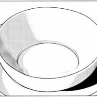
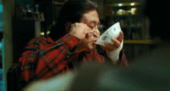
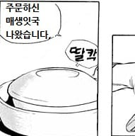
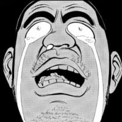
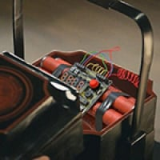

조조가 황제에게 바친 음식.jpg
댓글

")
")

에어 매생이가 아냐?
쬬 인성 씹 ㅋㅋㅋㅋㅋㅋㅋㅋㅋㅋㅋㅋㅋㅋㅋㅋ
도망치던 시절 그리웠다던 고깃국, 오는 길에 그리움 다 푸셨네
???:고깃국이라는 개념을 먹는거야~
ㅋㅋㅋㅋㅋㅋㅋㅋㅋㅋㅋㅋㅋㅋㅋㅋㅋㅋㅋㅋㅋㅋㅋㅋㅋㅋㅋㅋㅋㅋㅋㅋㅋㅋㅋ
조조는 충신이야
에어만두?
그렇지 음식이 있었으면 냄새로 바로 알아차리지
편집 없이 봐도 만세하는거 ㅈㄴ 멕이는거같네
회귀한 순욱 비장의 한수
순욱 : 배달오류인가? 오늘따라 밥이 많네
아 먹다가 배 터져 죽으라는 뜻이구나!! 더 살아 무엇을 하겠더냐!!!
공기국
???:눈을 감고 상상하여 보십시오


코이쯔www 컨셉 확실한www
" 이건 '에어'이군요 조승상 "
" 죽으라고. "
많이무라
